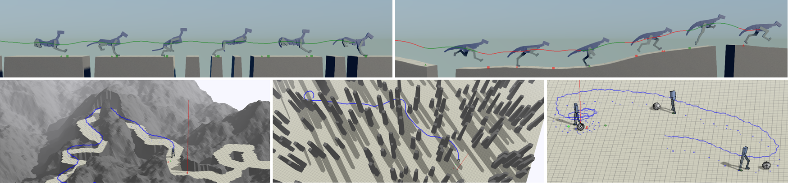

{{ page.title }}
University of British Columbia 2017
Xue Bin Peng

|
Abstract
While physics-based models for passive phenomena such as cloth and fluids have
been widely adopted in computer animation, physics-based character simulation
remains a challenging problem. One of the major hurdles for character simulation
is that of control, the modeling of a character's behaviour in response to its
goals and environment. This challenge is further compounded by the
high-dimensional and complex dynamics that often arise from these systems. A
popular approach to mitigating these challenges is to build reduced models
that capture important properties for a particular task. These models often
leverage significant human insight, and may nonetheless overlook important
information. In this thesis, we explore the application of deep reinforcement
learning (DeepRL) to develop control policies that operate directly using
high-dimensional low-level representations, thereby reducing the need for
manual feature engineering and enabling characters to perform more challenging
tasks in complex environments.
We start by presenting a DeepRL framework for developing policies that allow
character to agilely traverse across irregular terrain. The policies are
represented using a mixture of experts model, which selects from a small
collection of parameterized controllers. Our method is demonstrated on planar
characters of varying morphologies and different classes of terrain. Through
the learning process, the networks develop the appropriate strategies for
traveling across various irregular environments without requiring extensive
feature engineering. Next, we explore the effects of different action
parameterizations on the performance of RL policies. We compare policies
trained using low-level actions, such as torques, target velocities, target
angles, and muscle activations. Performance is evaluated using a motion
imitation benchmark. For our particular task, the choice of higher-level
actions that incorporate local feedback, such as target angles, leads to
significant improvements in performance and learning speed. Finally, we
describe a hierarchical reinforcement learning framework for controlling
the motion of a simulated 3D biped. By training each level of the hierarchy
to operate at different spatial and temporal scales, the character is able
to perform a variety of locomotion tasks that require a balance between
short-term and long-term planning. Some of the tasks include soccer dribbling,
path following, and navigation across dynamic obstacles.
|
Thesis: [PDF]
|
Bibtex
@mastersthesis{
Peng_Thesis_2017,
series={Electronic Theses and Dissertations (ETDs) 2008+},
title={Developing locomotion skills with deep reinforcement learning},
url={https://open.library.ubc.ca/collections/ubctheses/24/items/1.0345638},
DOI={http://dx.doi.org/10.14288/1.0345638},
school={University of British Columbia},
author={Peng, Xue Bin},
year={2017},
collection={Electronic Theses and Dissertations (ETDs) 2008+}
}